HAGGARD

After hours on the trail, you come across something strange. Your eyes detect it before your brain understands it. Among the organic, the sprawl, the mess: something man-made. Outside the confines of a typical gallery, WOODLAND DEITIES captures the sometimes arresting, sometimes terrifying feeling of encountering a designed object in an otherwise natural space. Nestled in the hills of the Stanislaus National Forest, these jagged pieces invite unsuspecting viewers to ask: is this a testament to something beyond? Or a threat from someone close by?

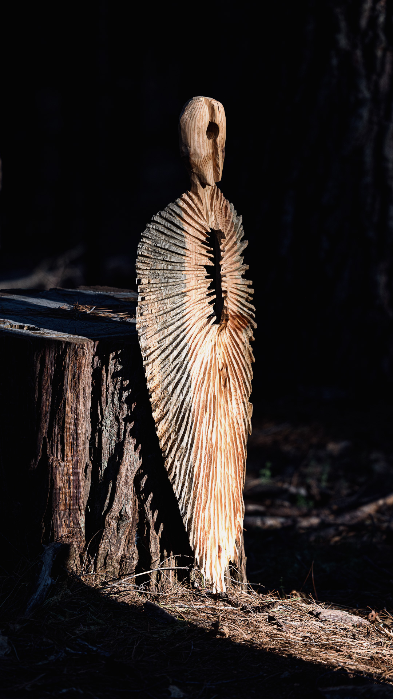
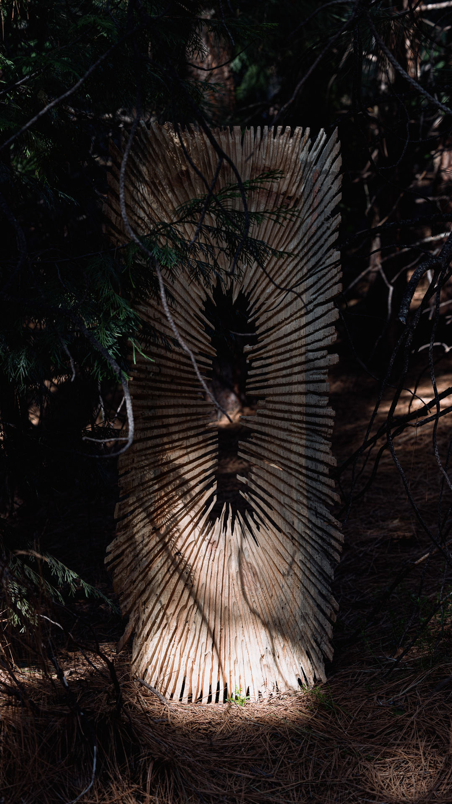
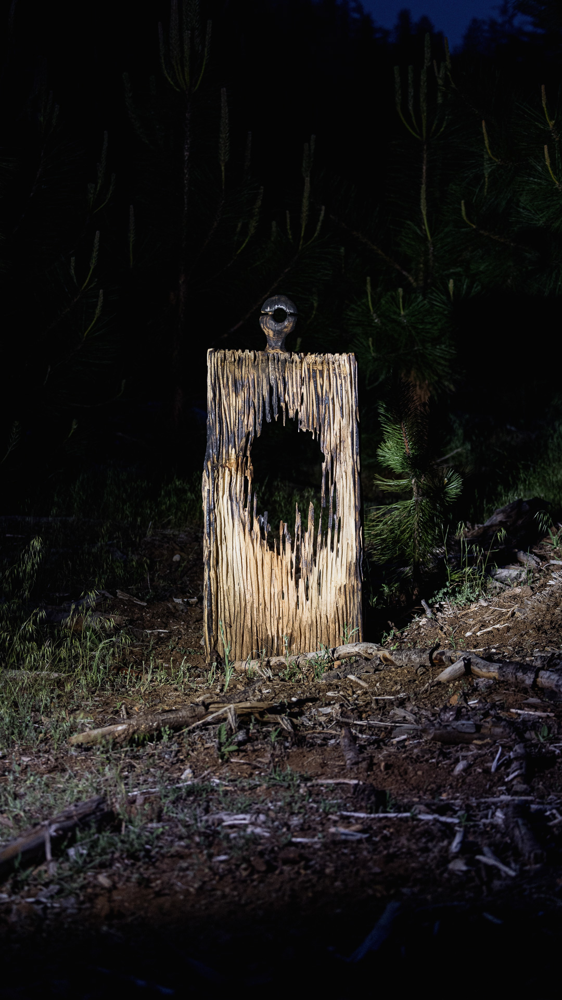
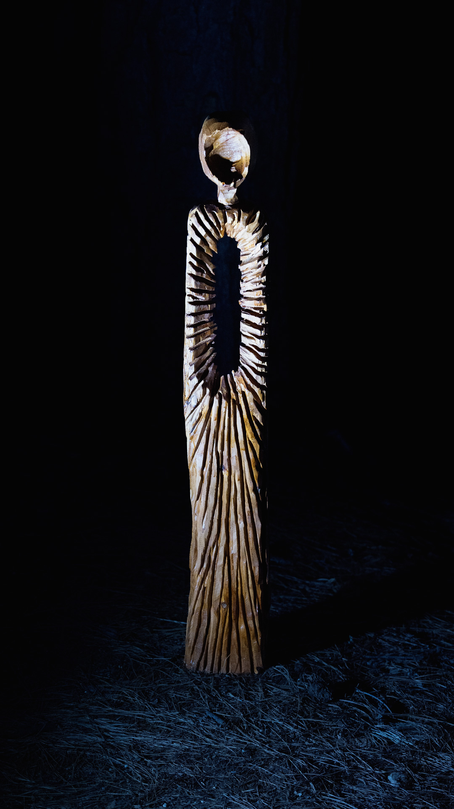
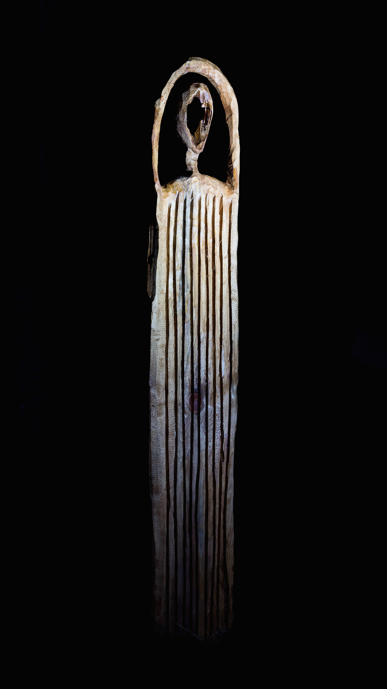
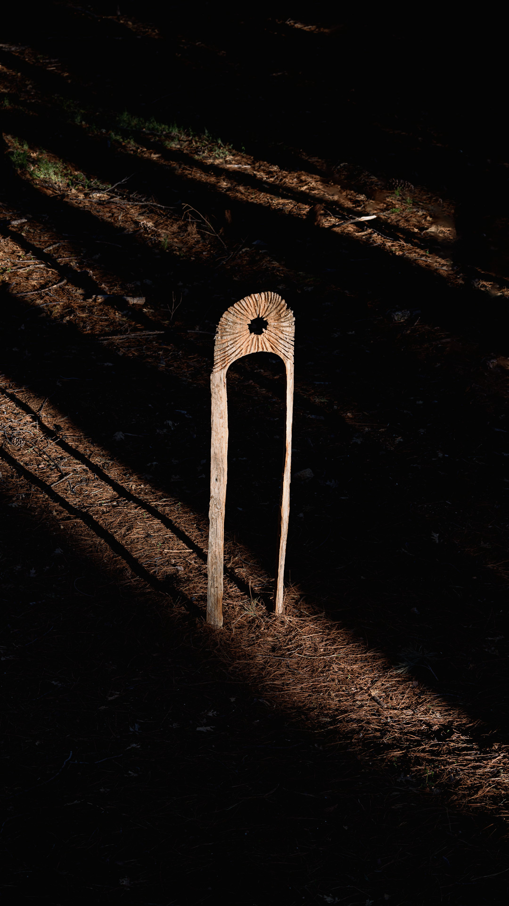
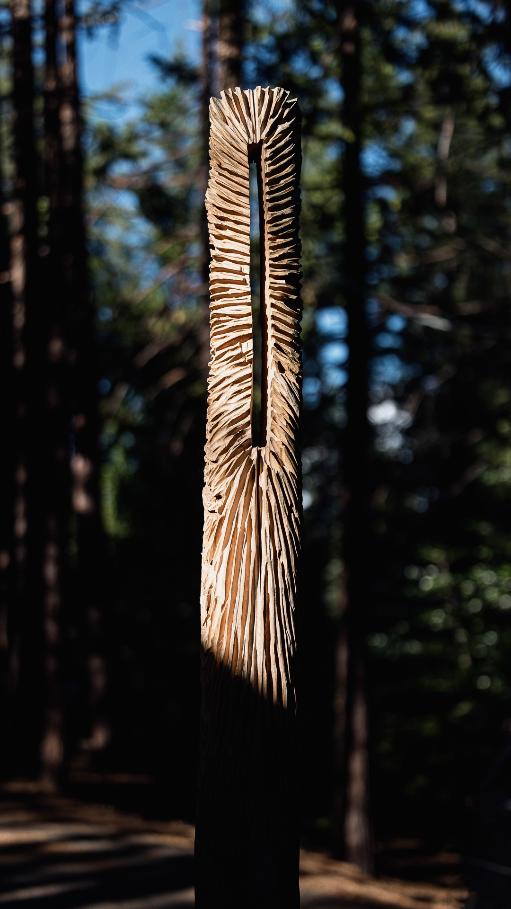

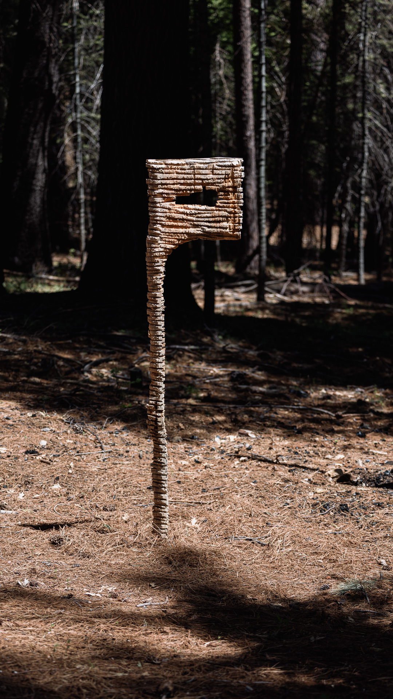
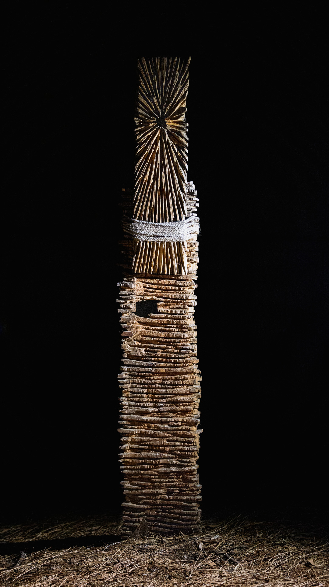
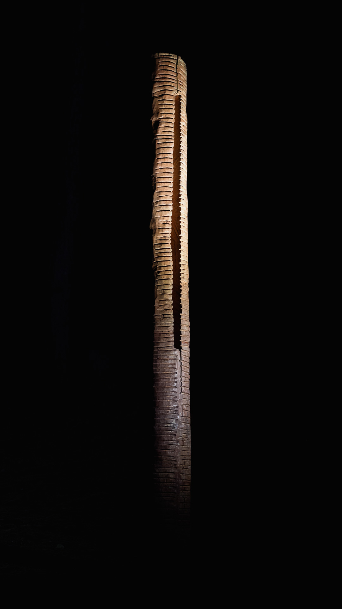
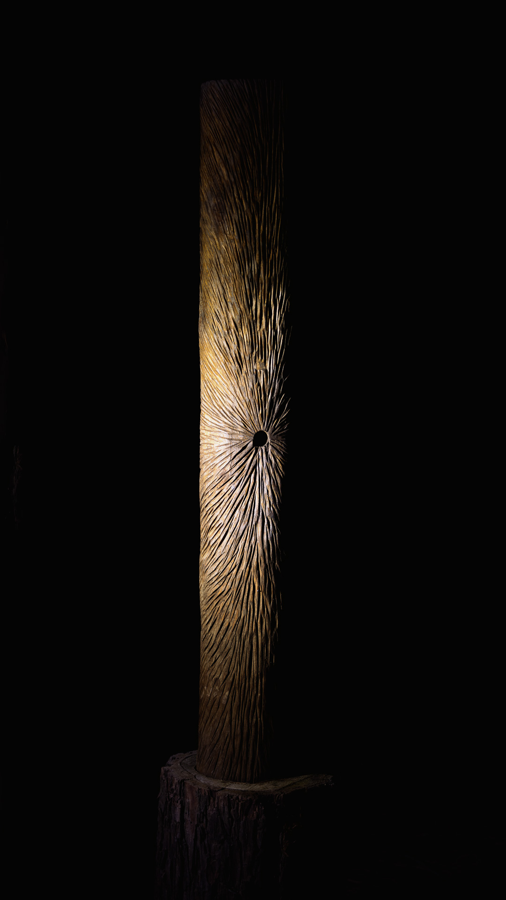


Viewers of the exhibit have decorated the area surrounding the above sculpture with symbols made of pine cones.
They can be read as follows:
Peace Symbol, SD, Peace Symbol, The Sculpture, Heart Symbol